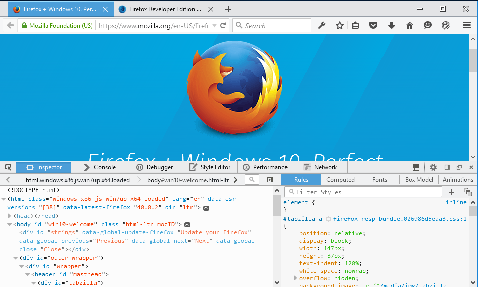

Win10、Wifi 除錯、ReactJS 工具、多程序 Firefox，還有更多
Firefox 42 已經來了！我們同樣為這個版本耗盡心思，要呈現高品質的 Firefox 開發者 (Developer) 版本瀏覽器。雖然版本說明中並未詳細載明許多已解決的問題，但這些小幅度修正的確讓開發工具更快、更穩定。仍有許多東西要向大家報告，包含 Firefox 運作方式的重要變化。
透過 Wifi 網路進行除錯
現在透過遠端網站除錯功能，不再需要 USB 連接線或 ADB，就能用 Wifi 訊號對 Firefox for Android 裝置進行除錯。
現已預設啟用多程序 (Multiprocess)
開發者版本現已預設啟用多程序 Firefox (Multiprocess，也稱為 E10s)。在啟用之後，Firefox 將於單一的背景程序中繪圖並執行 Web 相關的內容。如果你在更新至 Firefox 42 開發者版本之後，發現附加元件 (Add-on) 有任何問題，則請停用不相容的附加元件，或透過 about:preferences 回到單程序模式。
{kind=link}
支援 Windows 10 的佈景主題
開發者版本的佈景主題，現於 Windows 10 中提供嶄新外觀，以符合作業系統的樣式風格。欣賞一下：

開發者版本的暗主題 – Windows 10

開發者版本的亮主題 – Windows 10
React 開發者工具已支援 Firefox
如果你慣用 ReactJS 開發，可能已經注意到 React 最近釋出了開發者工具擴充元件的測試版本，亦開始支援 Firefox。目前官方尚未釋出對 Firefox 的正式版本，但可至 github 上找到原始碼。
其他變動
- 非同步呼叫堆疊，現可讓你追蹤 setTimeout、DOM 事件處理器、Promise 處理器等的執行流程。(Bug 981514)
- WebIDE 現具備新的 Firefox OS 模擬器設定頁面。你可使用預先設置的開發參考裝置清單，變更模擬器以執行自訂的設定檔與螢幕尺寸。(Bug 1156834)
- 檢測器 (Inspector) 現提供預先設置的 CSS 篩選器。(Bug 1153184)
- 針對程式碼範例，MDN 提示文字現使用語法強化功能。(Bug 1154469)
- 當於檢測器中按下「複製」的鍵盤快捷鍵時，就會將所選節點的 outerHTML 複製到剪貼簿中。(Bug 968241)
- 樣式編輯器 (Style editor) 的搜尋功能，現已新提升了使用者經驗。(Bug 1159001, Bug 1153474)
- 檢測器現已將 CSS 變數視為正常的宣告值。(Bug 1142206)
- 在 CSS 的自動補完選單中，現按下「向下」方向鍵之後，即可於空白欄位中列出所有結果。(Bug 1142206)
感謝為開發者工具團隊貢獻時間與精力的所有人，讓 Firefox 42 開發者版本更精采！每次版本釋出都有許多人撰寫修正檔、測試、文字記錄、回報臭蟲、寄發反饋意見、討論相關功能等等。你可提出具建設性的意見，讓我們知道你所期待的 Firefox 開發者工具，讓我們能了解後續各項功能的開發優先性。
立刻免費下載 Firefox 開發者版本。
原文連結：Developer Edition 42: Wifi Debugging, Win10, Multiprocess Firefox, ReactJS tools, and more